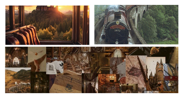
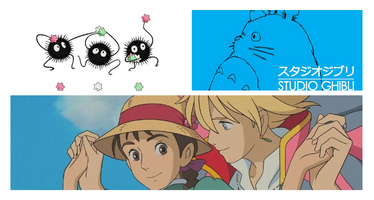

Hogwarts no Brasil?
Nova Escola de Magia e Bruxaria Revelada pela Icônica J.K. Rowling.
Uma reviravolta mágica surpreendente, a renomada autora J.K. Rowling, criadora do universo de Harry Potter, anunciou hoje a descoberta de uma nova escola de magia, a Escola de Magia e bruxaria do Sul do Brasil.
Um Santuário para Bruxos e Bruxas em Formação.
Localizada em meio às densas florestas tropicais, a escola é um santuário escondido para jovens bruxos e bruxas em formação. Segundo Rowling, a escola oferecerá um currículo mágico único, inspirado na rica cultura e na vasta biodiversidade da região.
Feitiços Ancestrais e Técnicas Especializadas aos Estudantes Sorteados.
Os estudantes sorteados para frequentar esta escola terão a oportunidade de aprender feitiços ancestrais passados de geração em geração, bem como técnicas mágicas especializadas que só podem ser encontradas nas profundezas da floresta amazônica.
Experiência na Natureza Promete Aulas ao Ar Livre com Criaturas Encantadas e Magia Elemental.
Além disso, a escola promete uma experiência única de imersão na natureza, com aulas ao ar livre envolvendo criaturas mágicas locais e práticas de magia elemental junto aos rios e cachoeiras encantadas.
Alunos Aguardam Ansiosamente a Oportunidade de Frequentar a Nova Escola.
A notícia já está causando um frenesi entre os fãs de Harry Potter em todo o mundo, com milhares de aspirantes a bruxos e bruxas esperando ansiosamente a chance de serem selecionados para frequentar esta nova e excitante escola de magia sul-americana.
Tony Stark e Apple
Tony Stark Anuncia Incrivel Parceiria com a Apple
Em uma conferência de imprensa eletrizante realizada hoje na sede da Stark Industries em Nova York, Tony Stark, o visionário bilionário e CEO da Stark Industries, surpreendeu o mundo ao revelar uma parceria estratégica de alto nível com a gigante da tecnologia, Apple Inc.Nova Linha de Dispositivos Tecnológicos e Revolucionário.
Com a presença de Tim Cook, CEO da Apple, ao seu lado, Stark anunciou que as duas empresas icônicas estavam unindo forças para criar uma nova linha de dispositivos tecnológicos revolucionários, combinando o talento inovador da Stark Industries com a expertise em design e tecnologia de ponta da Apple.Depoimento de Tony Stark:
"Estou extremamente empolgado em anunciar esta colaboração histórica entre a Stark Industries e a Apple", proclamou Stark, enquanto os flashes das câmeras iluminavam o palco. "Juntos, estamos embarcando em uma jornada para levar a tecnologia a patamares jamais vistos."Stark Industries e Apple Pode Resultar em Dispositivos Revolucionário.
Embora os detalhes específicos do projeto ainda sejam mantidos em segredo, rumores sugerem que a parceria entre Stark Industries e Apple pode resultar no desenvolvimento de dispositivos revolucionários, como smartphones ultra-resistentes com tecnologia de energia arc incorporada, óculos de realidade aumentada de última geração e até mesmo veículos autônomos equipados com inteligência artificial."Criatividade, Inovação e Visão Futurista".
Tim Cook expressou entusiasmo com a colaboração, descrevendo-a como uma fusão de "criatividade, inovação e visão futurista". "Estamos ansiosos para trabalhar ao lado da Stark Industries para criar produtos que redefinirão os limites da tecnologia e elevarão a experiência do usuário a um novo patamar", afirmou Cook.O que o Futuro Reserva Nesta Emocionante Colaboração.
A notícia da parceria entre Tony Stark e a Apple já está causando um alvoroço nas redes sociais e entre os entusiastas da tecnologia em todo o mundo, com muitos expressando expectativas elevadas para o que o futuro reserva nesta emocionante colaboração entre duas das empresas mais influentes e inovadoras do mundo. Enquanto o mundo aguarda ansiosamente por mais detalhes sobre os produtos resultantes desta colaboração épica, uma coisa é certa: a união entre Stark Industries e Apple promete mudar para sempre o cenário da tecnologia global.Neo, o Escolhido, Agora Pai!
Neo, Anuncia Chegada de um Novo Herdeiro.
Em um anúncio surpreendente que pegou os fãs de Matrix de surpresa, o lendário Neo, também conhecido como o Escolhido, revelou que está prestes a embarcar em uma jornada completamente nova - a paternidade.
O casal, que Passou por Inúmeras Provações e Desafios no Mundo Virtual da Matrix
Em uma declaração emocionante feita através de seus representantes, Neo compartilhou a alegria de que ele e Trinity estão esperando seu primeiro filho juntos. O casal, que passou por inúmeras provações e desafios no mundo virtual da Matrix, agora está ansioso para dar as boas-vindas a uma nova vida no mundo real."É Uma Nova Aventura Para Nós..."
"Estamos incrivelmente emocionados em anunciar que estamos esperando um bebê", disse Neo. "É uma nova aventura para nós, e estamos ansiosos para explorar este próximo capítulo juntos."Seguidores Expressam sua Alegria e Apoio ao Casal.
A notícia da paternidade de Neo ecoou por todo o mundo, com fãs e seguidores expressando sua alegria e apoio ao casal. Muitos destacaram a ironia poética de um ser tão poderoso e emblemático como Neo agora embarcar em uma jornada de cuidar e orientar uma nova vida. Enquanto Neo e Trinity se preparam para receber seu filho, o mundo real celebra a chegada de uma nova geração de protetores da liberdade e da verdade. Com Neo liderando pelo exemplo, espera-se que seu filho herde não apenas seu nome, mas também sua coragem, determinação e compaixão.Família de Neo Está Prestes a Embarcar em uma das Aventuras mais Emocionantes e Significativas de suas Vidas.
Enquanto aguardamos ansiosamente para ver o que o futuro reserva para Neo, Trinity e seu filho, uma coisa é certa: a família de Neo está prestes a embarcar em uma das aventuras mais emocionantes e significativas de suas vidas. Parabéns a Neo e Trinity nesta emocionante jornada rumo à paternidade!Studio Ghibli Arrasando Novamente!
